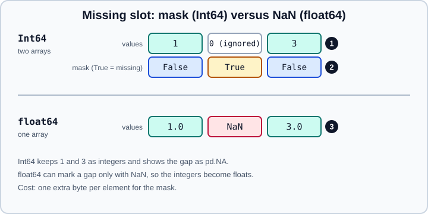

Nullable Integer, Float and Boolean Dtypes in pandas
|
This content was generated with the assistance of AI and should be verified against the official documentation before being relied on in production. |
NumPy integers and Booleans have no way to say "unknown". When a pandas column of integers meets a gap, it silently
becomes float64 with NaN, and a column of Booleans with a gap becomes object. The nullable dtypes (Int64,
Float64, boolean and their relatives) solve this: they keep the integer or Boolean type and mark the gaps with
pd.NA. This page explains how they are stored, how to create and convert them, how pd.NA propagates through
arithmetic, comparison and logic, how they interact with NumPy, and where they still bite. It targets pandas 3.1 on
Python 3.13 or 3.14 (NumPy 2.5) and was checked in October 2026; every example was run with Python 3.13 and pandas
3.1.0, and the printed output is the real output. The text equivalents (string and the default str) are covered in
Text Data and the str Dtype; the general rules for gaps are in
Missing Data.
All examples start with the usual imports and are independent of one another:
import numpy as np
import pandas as pdThe family
Nullable dtypes are named with a capital letter, which is how they are told apart from the NumPy dtypes.
| Dtype names | Meaning | Backed by |
|---|---|---|
|
Signed integers with |
NumPy integer array plus a Boolean mask |
|
Unsigned integers with |
NumPy integer array plus a Boolean mask |
|
Floating-point numbers with |
NumPy float array plus a Boolean mask |
|
True, False or |
NumPy Boolean array plus a Boolean mask |
|
Text or |
Python objects or PyArrow |
|
Arrow-backed types, also with |
PyArrow arrays (see PyArrow-Backed Data) |
The lowercase bool, int64 and float64 are the NumPy dtypes, and they cannot hold gaps. boolean (with the
"ean") and Int64 (capital I) are the nullable ones; a typo in the capitalisation changes the dtype, not just the
spelling.
How they are stored
A nullable array is two NumPy arrays of the same length: the values and a Boolean mask that is True where the
element is missing. The value under a masked slot is meaningless and ignored. A NaN-based float64 array has no room for
a mask, so it uses NaN itself as the marker and is forced to be a float.

The cost is one extra byte per element for the mask, and operations run on two arrays instead of one. In exchange the
integers keep exactly their value, which matters above 253 where float64 can no longer represent every integer
(identifiers and nanosecond counts are the usual victims).
import numpy as np
import pandas as pd
big = pd.Series(np.arange(1_000_000))
print(big.dtype, big.memory_usage(index=False), "bytes")
print("Int64:", big.astype("Int64").memory_usage(index=False), "bytes")
print("Int8 :", pd.Series(np.arange(1_000_000) % 100).astype("Int8").memory_usage(index=False), "bytes")
flags = pd.Series([True] * 1_000_000)
print(flags.dtype, flags.memory_usage(index=False), "bytes")
print("boolean:", flags.astype("boolean").memory_usage(index=False), "bytes")Output:
int64 8000000 bytes
Int64: 9000000 bytes
Int8 : 2000000 bytes
bool 1000000 bytes
boolean: 2000000 bytesCreating nullable data
import numpy as np
import pandas as pd
a = pd.array([1, 2, None], dtype="Int64") # None, np.nan and pd.NA all mean missing
print(a)
print(pd.array([1, 2, np.nan], dtype="Int64").tolist())
print(pd.array([1.0, 2.0, None], dtype="Int64").tolist()) # whole floats are accepted
try:
pd.array([1.5, 2.0], dtype="Int64") # lossy casts are refused
except TypeError as e:
print("TypeError:", e)
print(pd.Series([1, 2, 3]).astype("Int64").dtype)
print(pd.Series([1, 2], dtype="Int8").dtype, pd.Series([1], dtype="UInt32").dtype)
print(pd.array([True, False, None], dtype="boolean"))
print(pd.Series([1.5, np.nan], dtype="Float64").tolist())Output:
<IntegerArray>
[1, 2, <NA>]
Length: 3, dtype: Int64
[1, 2, <NA>]
[1, 2, <NA>]
TypeError: cannot safely cast non-equivalent float64 to int64
Int64
Int8 UInt32
<BooleanArray>
[True, False, <NA>]
Length: 3, dtype: boolean
[1.5, <NA>]Anything that means "missing" is accepted on input (None, np.nan, pd.NA) and is stored as pd.NA. Python lists of
integers with None do not become Int64 by themselves; you must ask for the dtype.
Converting a whole frame
convert_dtypes infers the best nullable dtype per column (and converts text to string); dtype_backend selects
NumPy-backed nullable types or PyArrow types. The same keyword exists on the readers and on to_numeric.
import io
import pandas as pd
raw = pd.Series([1, 2, None])
print(raw.dtype, "->", raw.convert_dtypes().dtype)
print(pd.to_numeric(pd.Series(["1", "2", None]), dtype_backend="numpy_nullable").dtype)
print(pd.to_numeric(pd.Series(["1", "x"]), errors="coerce", dtype_backend="numpy_nullable").tolist())
csv = "i,f,b,s\n1,1.5,True,a\n,,,\n3,2.5,False,c\n"
for backend in ("numpy_nullable", "pyarrow"):
d = pd.read_csv(io.StringIO(csv), dtype_backend=backend)
print(backend, d.dtypes.astype(str).to_dict())
# Or choose the dtype of selected columns
d = pd.read_csv(io.StringIO(csv), dtype={"i": "Int64", "b": "boolean"})
print(d)Output:
float64 -> Int64
Int64
[1, <NA>]
numpy_nullable {'i': 'Int64', 'f': 'Float64', 'b': 'boolean', 's': 'string'}
pyarrow {'i': 'int64[pyarrow]', 'f': 'double[pyarrow]', 'b': 'bool[pyarrow]', 's': 'string[pyarrow]'}
i f b s
0 1 1.5 True a
1 <NA> NaN <NA> NaN
2 3 2.5 False cconvert_dtypes also turns float columns of whole numbers into Int64, and its convert_integer keyword is deprecated
in pandas 3.1. When you need precise control, use astype on named columns, or the dtype argument of the reader. See
CSV and Text Files for the reader options.
Arithmetic and comparison
Missing values propagate: a result is NA wherever any input is NA. The result dtype stays nullable.
import pandas as pd
s = pd.Series([1, 2, None], dtype="Int64")
print((s + 1).tolist(), (s * 2).dtype)
print((s / 2).dtype, (s // 2).dtype) # true division gives Float64, floor division stays Int64
print((s > 1).tolist(), (s > 1).dtype) # a comparison gives boolean, with NA
print(s.sum(), s.mean(), s.min(), s.prod()) # reductions skip NA
print(s.sum(skipna=False))
print(s.cumsum().tolist())
print((pd.Series([1], dtype="Int8") + pd.Series([1], dtype="Int64")).dtype) # the wider type
print((pd.Series([1], dtype="Int64") + 1.5).dtype) # a float scalar: Float64
print((pd.Series([1], dtype="Int64") + pd.Series([1], dtype="Float64")).dtype)Output:
[2, 3, <NA>] Int64
Float64 Int64
[False, True, <NA>] boolean
3 1.5 1 2
<NA>
[1, 3, <NA>]
Int64
Float64
Float64Source: pandas user guide: NA semantics.
Division produces Float64, comparisons produce boolean, and mixing with a float produces Float64, never a NumPy
float. Overflow is the exception to the "safe" feel of the family: sized types wrap silently.
import pandas as pd
try:
pd.Series([200], dtype="Int8") # the constructor checks
except TypeError as e:
print("TypeError:", e)
i8 = pd.Series([100], dtype="Int8")
print((i8 + 100).tolist(), (i8 + 100).dtype) # arithmetic wraps aroundOutput:
TypeError: cannot safely cast non-equivalent int64 to int8
[-56] Int8The constructor validates, but arithmetic on Int8 does what NumPy’s int8 does and wraps modulo 256, as shown (100 + 100
is -56). Use Int64 unless memory pressure is real, and check ranges before narrowing.
Boolean logic and indexing
A boolean array follows Kleene logic (see the truth tables in Missing Data):
True | NA is True and False & NA is False, so the result is known whenever the known operand decides it.
import pandas as pd
b = pd.Series([True, False, None], dtype="boolean")
print((b | True).tolist(), (b & False).tolist(), (~b).tolist())
print(b.any(), b.all(), b.sum(), b.mean()) # NA skipped
print(b.any(skipna=False), b.all(skipna=False)) # NA matters only if it could change the answer
print(pd.Series([False, None], dtype="boolean").any(skipna=False))
values = pd.Series([10, 20, 30])
print(values[b.fillna(False)].tolist()) # the explicit form
print(values[b].tolist()) # NA in a mask counts as False
try:
b.astype(bool)
except ValueError as e:
print("ValueError:", e)
print(b.fillna(False).astype(bool).dtype)
try:
if b[2]:
pass
except TypeError as e:
print("TypeError:", e)Output:
[True, True, True] [False, False, False] [False, True, <NA>]
True False 1 0.5
True False
<NA>
[10]
[10]
ValueError: cannot convert float NaN to bool
bool
TypeError: boolean value of NA is ambiguousIndexing with a boolean mask treats NA as False. That is convenient but can hide a data problem, so fill the mask
explicitly (mask.fillna(False)) when the missing comparisons matter. Converting to NumPy bool fails while any NA
remains, and if cannot decide on an unknown value.
Interoperating with NumPy
NumPy functions see nullable arrays through __array__ and the ufunc protocol. NumPy integers and Booleans have no room
for NA, so a conversion of data with gaps gives float64 with NaN for integers and object for Booleans unless you
state what to do.
import numpy as np
import pandas as pd
s = pd.Series([1, 2, None], dtype="Int64")
print(s.to_numpy().dtype) # integers with NA: float64 with NaN
print(pd.Series([True, None], dtype="boolean").to_numpy().dtype) # Booleans with NA: object
print(s.to_numpy(dtype="float64", na_value=np.nan)) # the explicit conversion
print(s.astype("float64").tolist())
print(pd.Series([1, 2], dtype="Int64").to_numpy().dtype) # no NA: plain int64
try:
s.astype("int64")
except ValueError as e:
print("ValueError:", e)
print(s.fillna(0).astype("int64").tolist())
print(np.add(s, 1).tolist()) # ufuncs propagate NA
print(np.sqrt(pd.Series([4, 9], dtype="Int64")).dtype) # result is Float64Output:
float64
object
[ 1. 2. nan]
[1.0, 2.0, nan]
int64
ValueError: cannot convert NA to integer
[1, 2, 0]
[2, 3, <NA>]
Float64The safest recipe before handing data to a library that expects NumPy is to_numpy(dtype=..., na_value=...), which
states the target dtype and the fill. For a boolean array with gaps, to_numpy(dtype=bool) raises a ValueError and
asks for an na_value.
NaN is NA in nullable dtypes
In pandas 2 a nullable float column could hold both NaN and pd.NA, and they behaved differently (isna() was True for
both, but a NaN produced by an operation was a real float NaN). Since pandas 3.0 a NaN that enters a nullable dtype is
stored as NA, whether it was assigned, read or produced by a computation.
import numpy as np
import pandas as pd
f = pd.Series([1.0, 2.0], dtype="Float64")
print(pd.Series([1.0, np.nan], dtype="Float64").tolist()) # NaN stored as NA
print(pd.Series([np.nan, 1.0]).astype("Float64").tolist())
print((f - f).tolist(), (f / 0).tolist()) # 1.0 / 0 is still inf
zero = pd.Series([0.0, 1.0], dtype="Float64")
print((zero / zero).tolist()) # 0 / 0 is NA, not NaN
print(pd.Series([-1.0], dtype="Float64").pow(0.5).tolist()) # an invalid operation is NA tooOutput:
[1.0, <NA>]
[<NA>, 1.0]
[0.0, 0.0] [inf, inf]
[<NA>, 1.0]
[<NA>]Source: pandas 3.0.0 release notes.
Mathematically invalid results (0/0, the square root of a negative) therefore become NA in the nullable result, while
inf and -inf remain real values. Code that distinguished "missing" from "not a number" in Float64 needs a different
mechanism.
Assigning, filling and grouping
import numpy as np
import pandas as pd
s = pd.Series([1, 2, None], dtype="Int64")
t = s.copy()
t.iloc[0] = np.nan # becomes NA, the dtype is unchanged
print(t.dtype, t.tolist())
t.iloc[0] = None
try:
t.iloc[1] = 1.5 # a fractional float does not fit an integer dtype
except TypeError as e:
print("TypeError:", e)
print(s.where(s > 1, 0).tolist()) # NA in the condition counts as False
print(s.clip(upper=1).tolist())
print(s.value_counts(dropna=False).to_dict())
print(s.sort_values(na_position="first").tolist())
g = pd.DataFrame({"k": pd.array([1, None, 1], dtype="Int64"), "v": [1, 2, 3]})
print(g.groupby("k")["v"].sum().to_dict())
print(g.groupby("k", dropna=False)["v"].sum().to_dict())
print(g.groupby("k")["v"].sum().index.dtype) # the index stays Int64Output:
Int64 [<NA>, 2, <NA>]
TypeError: Invalid value '1.5' for dtype 'Int64'
[0, 2, 0]
[1, 1, <NA>]
{np.int64(1): 1, np.int64(2): 1, <NA>: 1}
[<NA>, 1, 2]
{np.int64(1): 4}
{np.int64(1): 4, <NA>: 2}
Int64Group keys in a nullable column keep their dtype in the result index, which is one of the practical advantages over the
float-with-NaN representation (1 is not turned into 1.0).
NumPy-backed nullable types or PyArrow
Two families give you gaps without floats: the NumPy-backed masked arrays described here, and PyArrow-backed types
(int64[pyarrow], requested with dtype_backend="pyarrow" or pd.ArrowDtype). Both use pd.NA.
| Aspect | NumPy-backed (Int64) |
PyArrow-backed (int64[pyarrow]) |
|---|---|---|
Dependency |
None beyond NumPy |
PyArrow, which is optional in pandas 3.1 |
Missing marker |
Mask array, one byte per element |
Arrow validity bitmap, one bit per element |
Types |
Integers, floats, Boolean, |
All Arrow types: decimals, dates, lists, structs, dictionaries |
Interop |
Native to pandas and NumPy |
Zero-copy exchange with Arrow, Parquet and other Arrow tools |
Maturity |
Longest-established |
Broader type coverage; a newer code path in pandas |
For everyday data analysis the NumPy-backed family is the simplest choice. Prefer the PyArrow-backed types when the data comes from Parquet or another Arrow source, or when you need types NumPy does not have. PyArrow remains optional in pandas 3.1; older material saying that pandas 3.0 would require it is outdated.
Pitfalls
-
Capitalisation matters:
"Int64"is nullable,"int64"is not;"boolean"is nullable,"bool"is not. -
They are not the default. Lists,
read_csvand arithmetic produce NumPy dtypes unless you ask for nullable ones. Request them withdtype,dtype_backendorconvert_dtypes. -
Sized types wrap silently on arithmetic (
Int8,Int16), as shown above. -
bool(pd.NA)raises. Fill NA before using a result inif,and,or,notorassert. -
Rolling and some other window operations convert to NaN-based floats; the result of
rolling(2).sum()on anInt64column is a plain float column. -
Third-party code may call
np.asarrayand get floats or an object array. Convert explicitly withto_numpybefore handing the data over. -
Equality of objects: use
equals()orpandas.testingto compare whole objects;==returns NA for gaps. -
Do not mix NA flavours:
np.nan,Noneandpd.NAin the sameobjectcolumn are all missing but onlypd.NAis propagated three-valued; convert the column first.
Older material that no longer applies
| Statement in older books and tutorials | Today | Changed |
|---|---|---|
Integer columns with gaps must be |
Use |
0.24 / 1.0 |
A nullable float column can hold both NaN and |
NaN is stored as NA in nullable dtypes |
pandas 3.0 |
|
Removed; an |
pandas 2.0 |
|
Keyword deprecated |
pandas 3.1 |
PyArrow becomes a required dependency in pandas 3.0 |
Postponed; PyArrow is optional |
PDEP-10 decision |